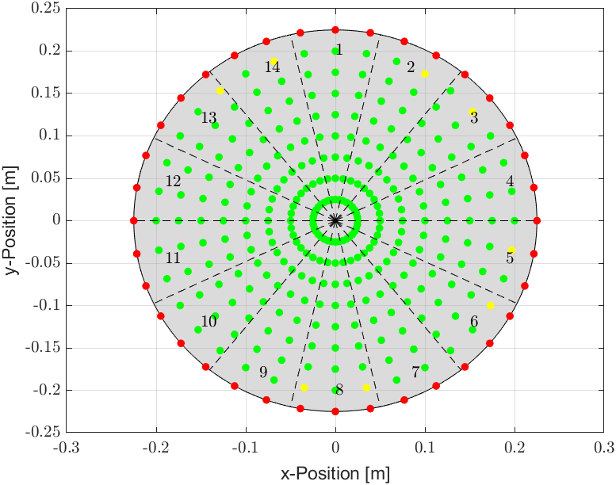

Design of a Fuzzy Controller for a Multihead Weigher
My thesis focused on improving the product distribution on the rotating distribution plate of a multihead weigher by implementing, testing and validating two fuzzy controllers.
Feel free to check out my Thesis-Repository on GitHub with the code I implemented for my thesis:
Here you will get a short glampse at what my thesis was about:
Motivation
A key process in food production is the accurate weighing and packaging of products, often automated using multihead weighers that combine multiple portions into a precise total weight (see Figure 1). Central to this process is the conical distribution plate, which evenly disperses product onto dosing chutes. These then convey the product into weighing chambers for accurate packaging. To enhance precision and efficiency, it is crucial to design a control system for the distribution plate's motor, allowing targeted product release.
My thesis focused on implementing a fuzzy control system to optimize this process. Given the complexity and nonlinearity of the system, traditional controllers like PID are insufficient, leading to the implementation of two types of fuzzy controllers: Mamdani and Takagi-Sugeno. The effectiveness of these controllers is evaluated through simulation in MATLAB, comparing their performance based on error calculations. The goal was to improve the accuracy of product distribution, ultimately enhancing the overall efficiency of the weighing and packaging process.
 Figure 1: Weighing process of a multihead weigher
Video source: https://youtu.be/TVnA-7kJC74?si=OCO03Gl8Bz4dd9fg
Figure 1: Weighing process of a multihead weigher
Video source: https://youtu.be/TVnA-7kJC74?si=OCO03Gl8Bz4dd9fg
Approach
The project began with an existing dynamic model; however, this model lacked the dynamics of the DC motor and the feedback effects of the particle on the distribution plate. These missing elements were crucial for accurately simulating and controlling the system, and their integration formed a key part of the approach. Futhermore in future versions of the control system the movement of more than one particle on the distribution plate needs to be addressed, so I had a look into expanding the model to account for the movement of two particles at the same time.
Extension of the existing model
With the assumption that the motor turning the distribution plate was a standard DC motor I was able to easily identify the motor equations by looking at the standard DC motor circuit diagramm. With this in mind, I represented the dynamics of the motor as a state-space-model:
These two states could then be integrated into the exisiting dynamic model.
To integrate the feedback effects of the particle when it touches the distribution plate I identified the corresponding moments of inertia. Motor and plate are always on the same axis whereas the particle is on a different but parallel axis. By using the parallel axis theorem I was able to find the resulting moment of inertia for the whole system whether the particle has contact with the plate or not. With this being the final task of expanding the dynamic model I could continue on analyzing the movement of two particles.
Movement of two particles on the distribution plate
The movement of two particles on the rotating distribution plate meant I had two state vectors for each particle. These two state vectors could then also be integrated into the dynamic model. I also had to think about the different cases of contact, for example where one particle has contact or even both. Finally, I adapted the dynamic equations for the movement of both partciles.
Designing a Fuzzy controller
Mamdani-Fuzzy-Controller
To implement the Mamdani fuzzy controller, the first step was to define the inputs and outputs. The controller takes the position error, calculated as the difference between the current position and the target position, as its input and outputs a control voltage. This voltage is applied to the DC motor, which adjusts the rotational speed of the distribution plate.
The control rules were established based on the principle that a larger distance from the target position requires a faster rotation of the distribution plate. The rules were structured to apply higher voltages for larger angular and radial differences, ensuring the particle moves efficiently toward the target.
Initial simulations revealed that while the particle approached the target, the motor received excessive voltage near the plate's edge. Adjustments were made to the membership functions, narrowing the range for small errors to reduce the output voltage. This optimization resulted in more precise control, allowing the particle to reach the target position successfully, thus completing the Mamdani controller implementation.
Takagi-Sugeno-Fuzzy-Controller
The implementation of the Takagi-Sugeno fuzzy controller was straightforward, building on the success of the Mamdani controller. The input membership functions remained unchanged, while the output membership functions were replaced by singletons positioned at the centroids of the output membership functions from the Mamdani controller.
The rule base, which performed well in the Mamdani controller, was also retained. The Takagi-Sugeno controller was then tested under the same conditions as the Mamdani controller, and it successfully guided the particle to the target position, confirming its effectiveness for this application.
Results
Through simulations across all possible discharge positions, both fuzzy controllers were validated. Both controllers showed very good results (see Fig. 2), with green and yellow discharge points indicating successful control simulations and red indicating unsuccessful ones. An initial simulation attempt was also made for controlling multiple particles.

Figure 2: Results of the Mamdani-Fuzzy-Controller
Figure 3: Results of the Takagi-Sugeno-Fuzzy-Controller